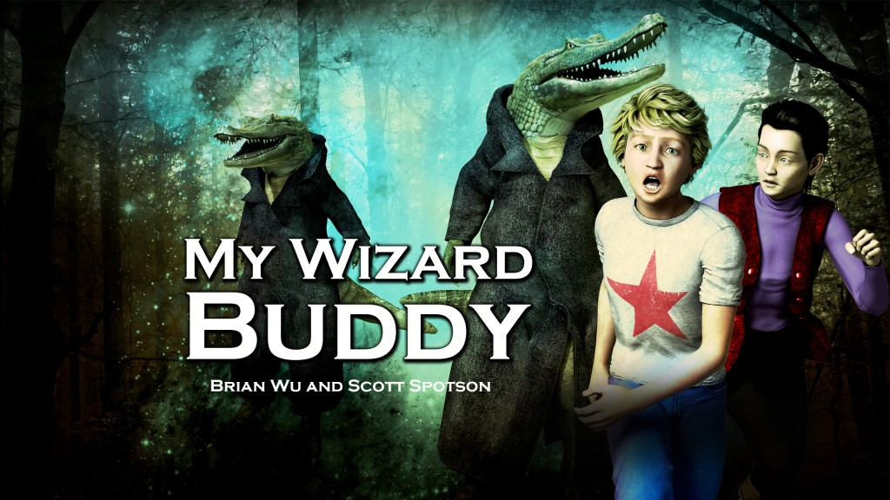
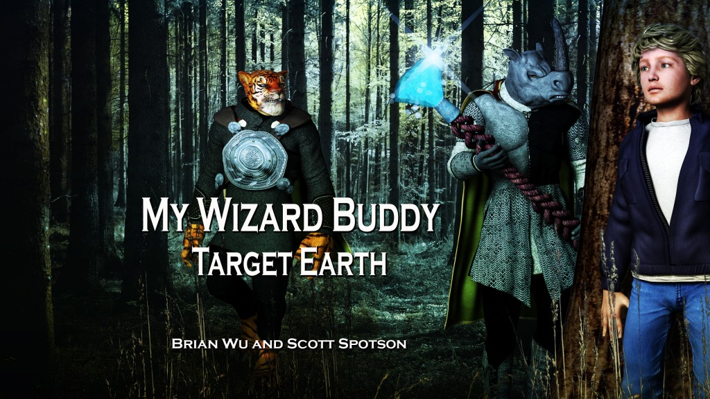

Scott Spotson
My Wizard Buddy


One day, lonely 11-year-old Tyler Dunsmore wishes out loud for a best friend. Not only does his wish come true, but his new best buddy is Dirk, a 11-year-old wizard--a magical being who is from another world and is unfamiliar with Earth. Dirk often is too eager to help Tyler out with tough dilemmas in his day-to-day life, but his antics often backfire, leaving Tyler to wonder: is having a wizard for a buddy worth it? Enjoy the bonding between two very different boys in My Wizard Buddy.
Kindle: http://www.amazon.com/My-
Kobo: https://store.kobobooks.com/

Tyler's wizard buddy, Dirk, has often driven Tyler to distraction even as he amicably conjured feats of incredible magic to help Tyler out of tight spots. Now, both boys are 12 years old, and Dirk has invited Tyler to visit his own wizard planet, called Adgiligda. Tyler hesitates before accepting, but when he does, it's one giant adventure after the other when Tyler joins in eye-popping games of wizardry and tangles with fearsome magical beasts!
Kindle: http://www.amazon.com/My-
Kobo: https://store.kobobooks.com/


Tyler, now 13, feels abandoned this time around as he's captured on Earth by an ancient race of galaxy hunters called the Genzi, and must now find his own way to escape without the help of his wizard buddy, Dirk. Detained along with fifteen other Earthlings, he must outwit the Genzi as they place dangerous games of skill and agility in his path. Does Dirk manage to find Tyler and save the day--or will Tyler have to fend for himself and his band of fellow humans?
Kindle: http://www.amazon.com/My-
Kobo: https://store.kobobooks.com/